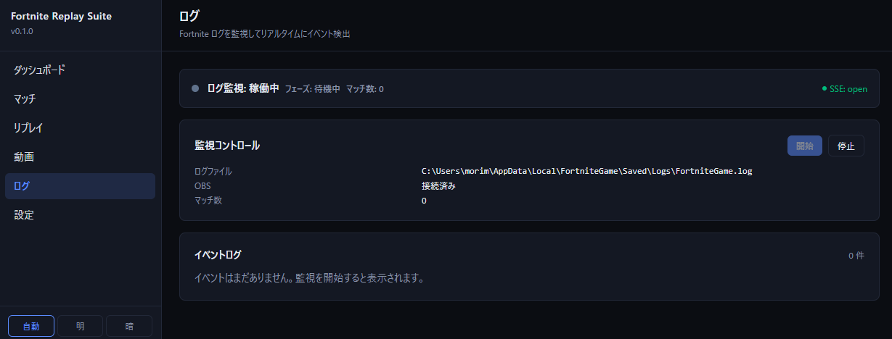
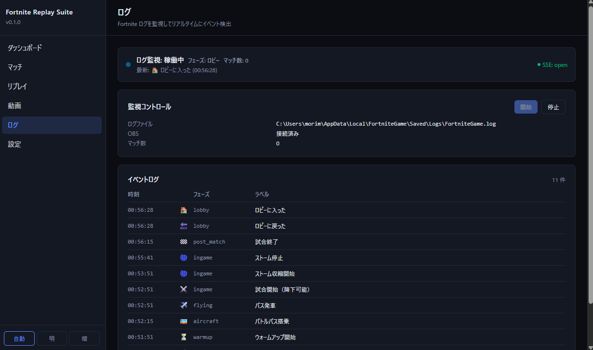

何に使う機能か
「いま試合中か」「直前のロビー戻りはいつか」を Fortnite を起動したまま検出できます。OBS のリプレイバッファ自動保存（log_monitor_api 内の OBS 連携）等のトリガーに利用されます。
1ログ監視ページ
サイドバーの「ログ」または /logs を開くと、ログ監視のコントロールパネルが表示されます。初期状態では監視はオフ（イベントは流れない）です。

- 右上のトグル: 監視のオン/オフを切り替え
- ログパスバナー: 現在 tail 対象としている
log_pathの表示。未検出なら「ログファイル(未検出)」 - イベント表示エリア: 受信したイベントを時系列で追加表示
2監視のオン/オフ
右上のトグルをオンにすると、ブラウザが /api/log-monitor/events に EventSource (SSE) 接続を開き、サーバ側でログファイルの tail が始まります。

Fortnite が起動していない場合
tail 対象ファイルへの追記が無いため、何のイベントも流れません。これは正常動作です。
トグルをオフにすると、ブラウザ側で EventSource が close され、ブラウザの Network タブで /api/log-monitor/events が finished になります。サーバ側の tail も解放されます。
3受信できるイベント
| イベント名 | 意味 | 検出契機 |
|---|---|---|
match_start |
試合開始 | ロビーから試合への投入を示すログ行を検出 |
match_end |
試合終了 | 試合終了を示すログ行を検出（または続くロビー復帰） |
obs_save |
OBS リプレイバッファ保存 | log_monitor_api 内の OBS 連携が SaveReplayBuffer を呼んだ際（OBS 連携有効時のみ） |
4ログパスの設定
tail 対象は ~/.fortnite-suite/config.json の log_path で指定します。設定ページ（03 章 §3）で編集できます。
既定例
%LOCALAPPDATA%\FortniteGame\Saved\Logs\FortniteGame.log
ログファイルのローテーション
Fortnite は起動のたびに古いログを FortniteGame.log.<n>.bak にリネームし、新しい FortniteGame.log を作成します。監視中にゲームを再起動すると inode が変わるため、サーバ側は自動的に新ファイルへ追従します。